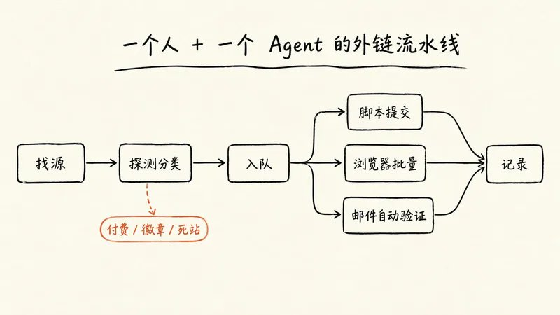
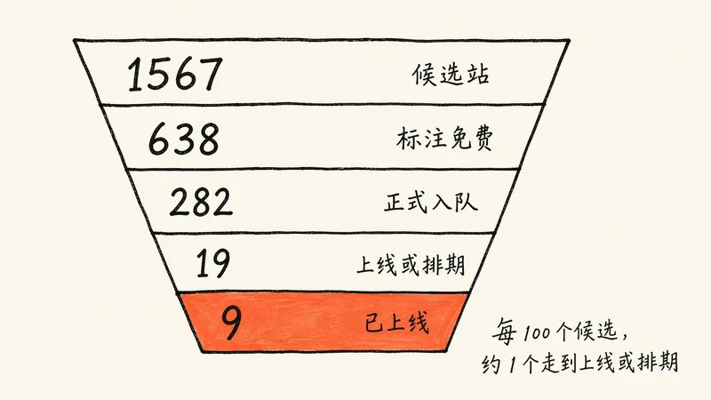
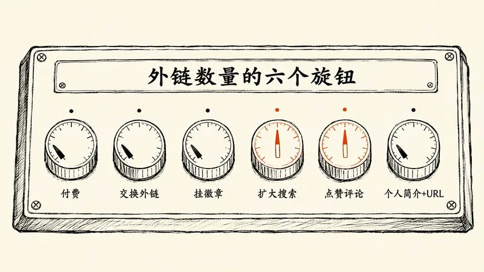

规则怎么写、资产怎么备、站怎么筛、表怎么交，以及想要更多外链时可以拧的六个旋钮
by Sagasu · 2026年10月
给新产品做外链，最磨人的从来不是策略，是体力活：找站、注册、收验证邮件、填表、传 logo、选分类、等审核。一个人一晚上交十几个站就算高效了。
这次我把这件事整个交给了 Grok Bot。一天之内，它从 4000 多个候选站里筛出 282 个能免费提交的站，按难度分三条线自动提交，自己收验证邮件、自己点确认链接，顺手往 22 个 GitHub awesome 列表开了 PR。我做的事情只有三件：定规则、批例外、点十来封必须我本人点的验证邮件。
你问我如何注册 grok bot ？找
@app_sail
他的文章有很多这类教程
推广的产品是 DMtheFounder（
dmthefounder.com
），一个免费招聘板：把创业公司创始人在 X 和 Hacker News 上发的早期工程岗汇总到一起，工程师可以直接私信创始人。下面所有数字都来自这一天的提交队列 CSV、脚本日志和对话记录。
先说结果。当天确认上线 9 个站，另有 10 个发布平台排上了未来几个月的发布日期，还有大约 120 个站已提交、有回执、在等审核。
上线数看起来不多，原因很明确，而且都是我主动选的：
- 不付费。 所有付费档、付费插队、「免费提交但付费才发布」的站一律跳过。
- 没做「个人简介 + URL」这类外链。 在社区、论坛、开发者平台注册个人主页、在简介里留网址，是量最大、上线最快的一类，这次完全没碰。
- 很多站在排队。 免费档普遍要排队，有的排几周，有的排到明年 2 月，还有一个队列约 174 天。
上线数是规则拧出来的，不是能力上限。
规则放宽一点，数字就会变。这篇文章前半部分讲我这次的完整流程，后半部分讲如果你愿意付费、交换、挂徽章、扩大搜索、点赞评论、做个人简介，分别能多拿到什么。
一、你会用到 Grok Bot 的哪些能力
这套流程用到的东西不多，都是 Grok Bot 自带的：
| 能力 | 在流程里干什么 |
|---|---|
| 原生收件箱（ [email protected] ） | Agent 自己的邮箱，用来批量注册、接收验证邮件 |
| Workspace + 脚本 | 存队列 CSV、日志、logo 和截图，跑探测和提交脚本 |
| Executor 子任务 | 负责「找站 + 筛选」，产出可提交的队列 |
| computerUse 浏览器 | 处理需要登录、上传图片、选发布日期的站 |
| Routine | 定时盯收件箱，自动点验证链接、传验证码 |
| GitHub CLI（gh） | fork 仓库、改列表、开 PR |
你不需要会写代码。脚本是 Agent 自己写的，我只看它汇报的结果。
二、第一步：写规则，再放权
Agent 跑起来很快，快到你来不及逐条审批。所以第一步不是找站，是写一条它能自己执行的判断规则。我的原话就一句：
付费的不管，交换的不管，就找那些能免费排队或者免费提交的外链。
展开成 Agent 能直接执行的版本：
只提交真正免费、或可以免费排队（排几个月也行）的站。遇到以下情况一律跳过，不用问我：只有付费选项；必须在我网站挂徽章或反链才能上线；互链交换；要先给 N 个产品点赞攒积分才能提交。不确定的情况单独问我。
规则写清楚之后，例外才好处理。这次出现了两个例外：FoundrList 要先给几个产品点赞并认真评论才能解锁免费发布，我同意了；Crowdstax 是同类机制，Agent 按同样方式处理。另一个关键授权是 GitHub PR：第一次它问要不要开，我回了一句「发，以后类似的 GitHub PR 都直接发」，之后它就按各个仓库的格式自己开，不再逐条问我。
还有一种情况 Agent 会主动停下来：Starter Story 的表单要填月收入和融资情况，产品没有这些数据，我回答「没有」，它就跳过了这个站，不会为了上线去编数字。
Agent 每来问你一次，都说明规则里漏了一种情况。把答案补进规则，下次它就不问了。
三、第二步：备好资产包和两条邮箱
资产包：一次备齐，所有站复用
每个目录站的表单都不一样，但翻来覆去就那十几个字段。提前写成一份产品信息模板交给 Agent，它就不会每个站临场发挥一遍描述。我准备的是：
| 字段 | 准备内容 |
|---|---|
| 名称、网址 | DMtheFounder / https://dmthefounder.com/ |
| 一句话 Tagline | 短版：Early engineering jobs posted by startup founders；另备一个更有营销感的变体，给 Launch 类站用 |
| 描述 | 短、中、长三档（约 1 句 / 3 句 / 一段），书签站另备一版带联系方式的长文案 |
| 分类 | Jobs / HR / Recruiting / Business，按站选最接近的 |
| 定价、阶段 | Free;Bootstrapped / Pre-revenue / Launched |
| 地点、成立年 | London, UK;2026 |
| 创始人信息 | 姓名 + X 账号（没有领英就明确写没有，别让 Agent 去猜） |
| 图片 | Logo 多个尺寸、首页截图、三张 16:9 截图 |
这些文件全放在 workspace 里，Agent 填表时直接取。
邮箱：拆成两条线
第一条是 Agent 自己的邮箱。
大部分站的注册和验证都走 Grok Bot 的原生收件箱。我建了一个叫「外链邮件自动处理」的 routine 一直盯着它：收到验证邮件就自动点链接，收到短验证码就立刻传给正在填表的任务。注册密码统一存在 workspace 的一个文件里，对话里只提文件路径，不出现明文。
第二条是产品域名邮箱
（
[email protected]
）。有些站要求用和网址同域名的邮箱注册，证明你是网站主人，比如 Latka、SaaSHub、StartupInspire。这类站的流程是：Agent 用域名邮箱注册，把需要我点的站列成一张短清单，我点完回一句「点了」，它再登录提交。这一天我亲手点的一共十来封，Shipboard、Entireweb、Idaho Index 都在里面。
让 Agent 处理海量邮件，你只点那几封必须证明身份的。
四、第三步：找站和筛选
这一步交给 Executor 子任务，它做三件事：抓、探、分。
抓。
从 GitHub 上的各种 submit 列表、SaaS 目录汇总、公开数据集里大量抓取候选站。我说了一句「扩大搜索，人家都能免费提交几千个」之后，它跑了好几轮：一轮抓取池 4266 个，另一轮 3450 个，再一轮 1996 个（各轮有重叠），一路累计排除了 523 个域名。
探。
写脚本逐个访问提交页，看 HTTP 状态、有没有表单、页面上有没有付费或徽章的文案。
分。
给每个站打一个状态标签，写进 CSV。最完整的一轮有 1567 个候选，分布如下：
| 标签 | 数量 | 含义 |
|---|---|---|
| free | 545 | 看起来可以免费提交 |
| free-queue | 93 | 免费但要排队 |
| unknown | 295 | 探测不出来，需要进一步看 |
| badge-required | 283 | 必须挂徽章 |
| dead | 176 | 站已经打不开 |
| likely-paid | 175 | 大概率收费 |
标成 free 或 free-queue 的一共 638 个。再按规则二筛，分五批正式入队：60、60、62、86、14，合计 282 条。最后一批只有 14 条，因为到后期它再去搜，回报说约 3800 个源已经「几乎筛完」了。
这里有个值得提前知道的经验：网上的「免费提交」列表大多是给 AI 工具准备的。第四批里就混进了大量 AI 工具目录，而 DMtheFounder 是招聘板，交进去要么被拒，要么上了也没有对口的访客。后来我让它改搜通用目录、创业公司目录、招聘相关目录和英国本地目录，命中率明显好了很多。
列表是别人按别人的产品整理的。先按自己的品类筛一遍，再开始交。
五、第四步：分三条线提交
队列有了，提交按难度分流：

脚本提交。
不需要账号的简单表单、同一套模板搭出来的站（大量老式 phpLD 目录、Laravel 书签站），还有开放了 API 的站（比如 Founderhood，调接口直接返回 pending），Agent 写小脚本或用 curl 批量提交，日志落到文件里。这条线最快，适合那些长得一模一样的目录站。
浏览器批量。
需要登录、上传图片、选免费档、挑发布日期的站，交给 computerUse 操作真实浏览器。一批 10 到 12 个站，跑完汇报一次再开下一批；批次太大，出错时很难知道断在哪。登录态存在一个 cookies 目录里，这一天攒了约 49 个站的会话，之后回去查审核状态不用重新登录。
邮件自动验证。
就是上一节的 routine。它和浏览器线并行：浏览器在某个站填表时触发了验证码，routine 收到邮件后马上传回去。FoundrList、IndieLaunch、IdeaKiln 都用短时效验证码，晚几分钟就过期，所以这条线的关键是快。
给 Agent 的提交指令可以照这个写：
从 queue-vetted-3.csv 取下一批 12 个站，用 computerUse 逐个提交。统一用产品信息模板里的字段，描述用中档。注册用 bot 邮箱，验证交给邮件 routine。遇到需要域名邮箱的站，记下来最后一起列给我。每个站结束后在 CSV 里更新状态：已上线（附链接）、已提交待审、已排期（附日期）、跳过（附原因）。整批做完再汇报。
Agent 跑得快不难，难的是跑完之后你还知道它干了什么。
所以每个站都要落一个状态。
六、第五步：GitHub awesome 列表
这条线不用注册任何账号，只要一个 GitHub 账号。Agent 按每个仓库的 CONTRIBUTING 和列表格式，往招聘、远程工作、求职资源、创业资源、伦敦本地这些主题的 awesome 列表开 PR，说明里写清楚 DMtheFounder 和这个列表的关系。
这一天一共开了 22 个 PR，已经有 1 个合并（
Awesome-Job-Search-Resources
），其余还在等维护者处理，比如
awesome-hacker-news
、
awesome-remote-job
、
awesome-london
。
合并通常很慢，但每一条都经过真人维护者审核，又放在目标用户真的会去翻的页面上。对一个给工程师用的招聘板来说，这条线性价比很高。
目录站给你一条链接，awesome 列表给你一个被人审过的位置。
七、第六步：记录和跟进
很多站交完不是立刻上线，而是给你一个发布日期。这一天排上期的有 10 个：
| 站点 | 排期 | 页面现状 |
|---|---|---|
| findasaas | 10 月 26 日 | 无独立链接 |
| Crowdstax | 11 月 2～8 日发布周 | 审核中 |
| FoundrList | 11 月 16 日 | 目前是私密预览页，发布日才公开 |
| LaunchRanked | 11 月 23～29 日投票周 | 已有倒计时页，审核通过后给 followed link |
| Pro Launch | 12 月 22 日 | 产品页已可访问 |
| Toolfound | 约 12 月 29 日 | 无独立链接，域名验证可选 |
| What Launched Today | 2027 年 1 月 16 日 | 审核前页面打不开 |
| HUNT0 | 2027 年 2 月 8 日那一周 | 产品页已可访问，免费队列约第 67 位 |
| Founderhood | 待审 | 接口返回 pending |
| Internet Is Beautiful | 队列约 174 天 | 无独立链接 |
发布平台的发布日当天往往需要你在场：回复评论、转发拉票。所以这张表要放进日历。
我这次的记录载体是五个队列 CSV、几份提交日志和对话里的阶段汇报，没有一张「全部结果」总表，这篇文章的数字是事后汇总的。建议你第一天就让 Agent 建一张总表，每个站一行：状态、链接、排期日、到期日、是否 dofollow。之后每周让 routine 回去查一遍待审站的状态，更新这张表。
八、一天下来的结果
当天确认上线的 9 个站。这 9 个都是
提交当天页面就已发布、外链当天就在
，不用等。表里的「约 90 天」说的是有效期：这类书签站和目录站的免费收录大约保留 90 天，到期可能下线，需要续期或重新提交。
| 站点 | 类型 | 当天状态 | 有效期 |
|---|---|---|---|
| Web Directory Listing | 目录站 | 已发布 | 免费收录约 90 天，nofollow |
| Bookmarks Club | 书签站 | 已发布 | 约 90 天 |
| Bookmark Spot | 书签站 | 已发布 | 约 90 天 |
| B3 Directory | 目录站 | 已发布 | 约 90 天 |
| BookmarkWhirl | 书签站 | 已发布 | 约 90 天 |
| Choice Bookmarks | 书签站 | 已发布 | 约 90 天 |
| TourBR | 书签站 | 已发布 | 约 90 天 |
| Startup Europe | 创业公司目录 | 已发布 | 未注明期限 |
| Sundir | 目录站 | 记录显示已列出，未单独存链接 | 未注明期限 |
所以，7 个书签站和目录站大约到明年 1 月中旬会集体到期。建议提交当天就让 Agent 把到期日写进总表，到期前提醒你决定续不续。
加上已排期的 10 个，整个漏斗是这样：
| 阶段 | 数量 | 占候选比例 |
|---|---|---|
| 候选站 | 1567 | 100% |
| 标注免费或免费排队 | 638 | 40.7% |
| 正式入队 | 282 | 18.0% |
| 已上线或已排期 | 19 | 1.2% |
| 已上线 | 9 | 0.57% |

读这张表要注意两点。第一，各层不是严格的子集：282 条入队里有一部分来自这 1567 个之外的研究表，比例只能看量级。第二，这是跑完当天的快照。还有约 120 个站在审核中，接下来几周会陆续出结果，再加上 22 个 PR，最终数字会比现在高。
回到开头说的三个原因，这个漏斗里每一层的流失都能对上：likely-paid 的 175 个和付费插队的站，是「不付费」挡掉的；badge-required 的 283 个，是「不挂徽章」挡掉的；个人简介类外链根本没进候选池；而已排期的 10 个和待审的约 120 个，就是「在排队」。
九、想要更多外链：六个可以拧的旋钮
这一节是这篇教程里最值得挖的部分。我的规则把大部分旋钮都拧到了最低，你可以按自己的预算和底线调。

| 旋钮 | 这次的设置 | 拧开后能多拿到什么 |
|---|---|---|
| 付费 | 关 | 只有付费档的站、付费插队、付费才发布的站 |
| 交换外链 | 关 | 要求互链的目录和合作伙伴页 |
| 挂徽章 | 关 | 第三轮候选里 283 个强制徽章站，加上「挂徽章才给 dofollow」的站 |
| 扩大搜索 | 开 | 更多候选，但边际收益递减 |
| 点赞评论 | 部分开 | 「先点赞 N 个才能提交」的 launch 平台 |
| 个人简介 + URL | 关 | 社区、论坛、开发者平台的个人主页外链 |
付费。
这是最直接的一个旋钮。这次跳过的付费站里有 Tiny Startups（69 英镑）、aitoolly（29.99 美元）、BetaList、Microlaunch 等，第三轮候选里标成 likely-paid 的有 175 个。很多 launch 平台的付费档买的其实是时间：免费排几个月，付费下周上线。如果你的产品有明确的发布节点，付费插队是合理的选择。给 Agent 的规则可以写成：「单站 30 美元以内可以付，先列清单给我批，不要自己下单。」把付款这一步留在自己手里。
交换外链。
很多目录站要求你在网站上放一个指向它们的链接。可以接受的话，建一个独立的 /links 或 partners 页面集中放，不影响首页。要注意的是，Google 的
垃圾内容政策
把「过度的链接交换」列在链接垃圾的例子里，所以量要克制，只换和你品类相关的站。
挂徽章。
这是这次挡掉最多站的一条规则：283 个强制徽章站，还有 Smol Launch、SaaSFame、ToolFame、Supa Launch、LetsLaunch 这类「挂徽章才上线或才给 dofollow」的。如果你愿意，可以做一个 /featured 或 /launches 页面，把所有徽章集中放在那里。规则写成：「需要徽章的站可以交，徽章统一放到 /launches 页面，交完把徽章代码汇总给我。」
扩大搜索。
这个旋钮我拧到了最大，4266、3450、1996 三轮抓取池，最后一轮只多出 14 条可用的。说明同一类关键词的源很快会被筛完。继续拧的方法是换方向：按品类找（招聘、远程工作、开发者工具），按地区找（英国、欧洲、你产品所在的城市），按语言找（非英语的本地目录），而不是在同一批 submit 列表里反复刷。
点赞评论。
很多 launch 平台要求先给别的产品点赞或评论攒积分，才能提交自己的。这次只开了 FoundrList 和 Crowdstax 两个例外，FoundrList 已经排到 11 月 16 日发布。如果放开这条，launch 平台的数量会多一截。关键是评论要真实，Agent 先读懂对方产品再写一两句具体的话，不要群发模板。规则可以写成：「点赞类站可以做，每个站最多点赞 5 个，评论必须针对对方产品的具体功能，交前给我看一眼。」
个人简介 + URL。
在开发者社区、问答网站、论坛、作品集平台注册个人主页，在简介和网站字段里留产品网址。这类外链量大、通常不用审核、注册完就在线，这次完全没做。它和产品目录是两套候选池，可以让 Executor 单独抓一份清单。要注意，这类平台对批量注册往往更敏感，建议慢一点，每个资料都认真填，用一个你真的会继续维护的身份。
还有一个不算旋钮的变量：
耐心。
这次已排期的最晚排到明年 2 月。免费的代价就是排队，接受了这一点，「上线数」会随着时间自己往上走。
旋钮怎么拧，取决于你愿意用什么换：钱、页面空间、时间，还是一点社区参与。
十、踩坑表
这一天实际撞上的问题和处理办法，照着做大概率会遇到同样的：
| 坑 | 现象 | 处理 |
|---|---|---|
| 验证码 / Cloudflare | 脚本过不去 | 改用浏览器；浏览器也过不去就跳过 |
| 短验证码过期 | 邮件到了，表单那边已超时 | routine 即时接力；不行就重发 |
| routine 和浏览器抢桌面 | 两个任务同时控制一个浏览器，整批中断 | 只开一个浏览器实例，routine 用独立标签页，错开调度 |
| 两个浏览器任务撞车 | 同一批 12 个站被两个任务同时抢 | 一次只跑一个浏览器任务，跑完再开下一批 |
| 品类不符 | 招聘板交进 AI 工具目录 | 筛选阶段就按品类过滤 |
| 「免费」实为付费 | In Links We Trust 交完才说要付费才上线 | 不算收录，按规则跳过 |
| 免费队列已满 | Firsto 未来约半年的免费名额满了 | 记下来以后再试 |
| 老目录服务器 bug | phpLD 站报 IPADDRESS Data too long | 对方的问题，直接换站 |
| 重复提交 | Made with React.js 被交了两次；Toolfound 返回 409 已在队列 | 对方一般会去重，用同一邮箱查状态 |
| 字段校验 | BestJobBoards 不认 2026 年成立 | 改填 2025 |
| 禁止 AI 提交 | JobSearchDB 政策明确禁止 AI Agent | 尊重对方规则，留给人工或跳过 |
| 站已死 | Canadian Directory 域名在卖、BizIndexer 返回 522 | 标记 dead，522 的可以过几天重试 |
十一、动手前的三个检查
这是哪种免费？
「免费」至少有五种：立即免费上线、免费但要排队、免费提交但付费才发布、免费但 nofollow（挂徽章才给 dofollow）、交完才告诉你要付费。让 Agent 在探测阶段就把「排队时长」和「上线条件」记进 CSV。
上线后能活多久？
书签站大多是 90 天左右，发布平台的首页曝光是一天或一周，awesome 列表只要不被删就一直在。先看它能给你留下什么，再决定花多少力气。
品类对不对？
最好的站，是你的目标用户本来就会去逛的站。
提交交给 AI，判断留给自己。
常见问题
需要会写代码吗？
不需要。探测脚本、提交脚本都是 Agent 自己写、自己跑的。你要做的是写清楚规则，看它的汇报。
我要花多少时间？
这一天我做的是：写规则、批两个例外、回答一次 Starter Story 的问题、点十来封域名邮箱的验证邮件。其余都在后台跑。
自动提交会不会被 Google 当成垃圾外链？
Google 的垃圾内容政策确实把「用自动化程序创建链接」和「低质量的目录或书签站链接」列为链接垃圾的例子，而且从 2019 年起，Google 把 nofollow 当作一种「提示」，自行决定计不计入排名（
Google 搜索中心博客
）。我自己的做法是：只交主动开放提交入口的站，每站只交一次，资料如实填写，重心放在发布平台、垂直目录和 awesome 列表上，书签站当作顺手的一层，不指望它们带排名。
为什么不直接付钱买外链？
可以付，见第九节的付费旋钮。不过按 Google 的政策，付费获得的链接如果传递排名，需要标注 sponsored 或 nofollow。花钱更适合买「时间」，比如 launch 平台的插队，而不是买链接本身。
写在最后
开工前我对 Agent 说的是「扩大搜索，人家都能免费提交几千个」。一天跑下来，我对这件事的理解变成了：Agent 能把几千个站的体力活一天做完，最后能拿到多少外链，取决于你把那六个旋钮拧到哪里。
我这次选了最保守的设置：不付费、不交换、不挂徽章、不做个人简介。得到的是 9 个当天上线、10 个排期、约 120 个待审和 22 个 PR。如果你的预算和底线不一样，同一套流水线可以跑出完全不同的数字。
等 FoundrList 和 LaunchRanked 的发布周过去，我再来看看这些外链实际带来了多少访问。你会把哪个旋钮拧开？欢迎在评论区说说。
参考资料
- Google 搜索中心：Google 网页搜索的垃圾内容政策（Link spam 一节）
- Google 搜索中心博客：Evolving “nofollow” – new ways to identify the nature of links（2019 年 9 月）
- Google 搜索中心：Qualify outbound links（rel 属性说明）
- 其余数字来自作者自己的提交队列 CSV、脚本日志与 Agent 对话记录，上线和排期页面链接见第七、八节表格